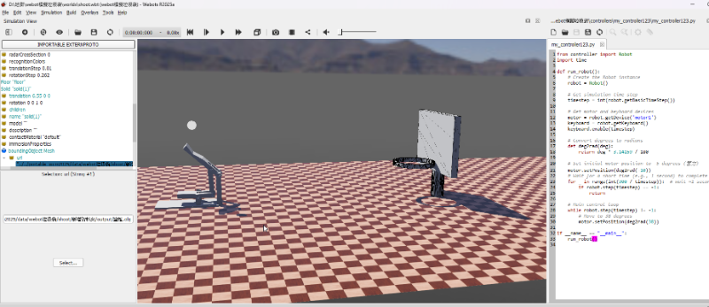

HW2 <<
Previous Next >> Midterm
HW3
HW3 (20%):建立 Webots 桌上籃球遊戲機模擬系統
hw3繪製零件
/downloads/41223215 shooter.7z
https://youtu.be/DddqK8xxv5s 半成品模擬影片
https://youtu.be/5rvXEyfOqPw 完成品模擬影片
https://youtu.be/EJ3XKhpBrUM webot製作
/downloads/41223215shooter.7z 檔案

過程
sovlespace繪製出零件 繪製出設計圖 再根據設計圖的形狀組配
組配完進行拆解轉檔(obj)(拆解過程會把尺寸縮小0.01倍)
進入webot 建robot 建出三個子特徵 solid(base) 兩個hingejoint(一個進行組裝 一個鎖點)
組裝過程續注意座標軸(會根據你繪圖起始的地方做原點) 可以進入sovlespace進行測量
測量鎖點點位 過程跟前面四連桿一樣 可以在過程中進行測試 看看點位有沒有準
鎖好之後模擬(我有發現老師給的設計圖因為角度會讓球沒辦法射那麼遠 所以我自己改良了程式 在發射前程式會先畜力)
加入球體(shape) 給定物理性質
加入地板(floor)
加入籃框(我在畫籃框時 匯入webot有個問題 因為沒有轉檔(沒必要)所以尺寸是正常的100倍 所以我自己又改了老師的分解檔案 去掉拆開的部分 只保留鎖小跟轉檔的能力)
之後模擬就成功了
以下為鎖小功能py檔
#!/usr/bin/env python
# -*- coding: utf-8 -*-
"""
STL to OBJ converter with scaling support
"""
import struct
import numpy as np
from pathlib import Path
class STLConverter:
def __init__(self, filename, scale=0.001):
self.filename = filename
self.scale = scale
self.is_binary = self._check_if_binary()
def _check_if_binary(self):
with open(self.filename, 'rb') as f:
header = f.read(5).decode('utf-8', errors='ignore')
return not header.startswith('solid')
def _read_binary_stl(self):
with open(self.filename, 'rb') as f:
f.seek(80)
triangle_count = struct.unpack('I', f.read(4))[0]
triangles = []
normals = []
for _ in range(triangle_count):
nx, ny, nz = struct.unpack('fff', f.read(12))
normals.append([nx, ny, nz])
triangle = []
for _ in range(3):
x, y, z = struct.unpack('fff', f.read(12))
triangle.append([x * self.scale, y * self.scale, z * self.scale])
triangles.append(triangle)
f.seek(2, 1)
return np.array(triangles), np.array(normals)
def _read_ascii_stl(self):
triangles = []
normals = []
current_triangle = []
with open(self.filename, 'r') as f:
for line in f:
line = line.strip()
if not line:
continue
parts = line.split()
if not parts:
continue
if parts[0] == 'facet' and parts[1] == 'normal':
normals.append([float(parts[2]), float(parts[3]), float(parts[4])])
elif parts[0] == 'vertex':
current_triangle.append([
float(parts[1]) * self.scale,
float(parts[2]) * self.scale,
float(parts[3]) * self.scale
])
elif parts[0] == 'endfacet':
if current_triangle:
triangles.append(current_triangle)
current_triangle = []
return np.array(triangles), np.array(normals)
def _write_mtl(self, filename, material_name):
with open(filename, 'w', encoding='utf-8') as f:
f.write(f"newmtl {material_name}\n")
f.write("Ka 0.2 0.2 0.2\n")
f.write("Kd 0.8 0.8 0.8\n")
f.write("Ks 0.5 0.5 0.5\n")
f.write("Ns 50.0\n")
f.write("d 1.0\n")
f.write("illum 2\n")
def _write_obj(self, filename, triangles, normals):
vertex_dict = {}
vertex_list = []
normal_list = []
faces = []
for triangle, normal in zip(triangles, normals):
face_indices = []
for vertex in triangle:
vertex_tuple = tuple(vertex)
if vertex_tuple not in vertex_dict:
vertex_dict[vertex_tuple] = len(vertex_list) + 1
vertex_list.append(vertex)
face_indices.append(vertex_dict[vertex_tuple])
normal_list.append(normal)
faces.append(face_indices)
material_name = filename.stem
mtl_filename = filename.with_suffix('.mtl')
with open(filename, 'w', encoding='utf-8') as f:
f.write(f"mtllib {mtl_filename.name}\n")
f.write(f"usemtl {material_name}\n\n")
for v in vertex_list:
f.write(f"v {v[0]} {v[1]} {v[2]}\n")
for n in normal_list:
f.write(f"vn {n[0]} {n[1]} {n[2]}\n")
for i, face in enumerate(faces):
f.write(f"f {face[0]}//{i+1} {face[1]}//{i+1} {face[2]}//{i+1}\n")
self._write_mtl(mtl_filename, material_name)
def convert(self, output_path):
if self.is_binary:
triangles, normals = self._read_binary_stl()
else:
triangles, normals = self._read_ascii_stl()
output_path = Path(output_path)
output_path.parent.mkdir(parents=True, exist_ok=True)
self._write_obj(output_path, triangles, normals)
print(f"轉換完成：{output_path}")
print(f"材質檔：{output_path.with_suffix('.mtl')}")
# 使用範例
try:
input_stl = "籃框.stl"
output_obj = "output/籃框.obj"
scale = 0.005
converter = STLConverter(input_stl, scale=scale)
converter.convert(output_obj)
except Exception as e:
print(f"錯誤: {e}")
以下為畜力控制器
from controller import Robot
import time
def run_robot():
# Create the Robot instance
robot = Robot()
# Get simulation time step
timestep = int(robot.getBasicTimeStep())
# Get motor and keyboard devices
motor = robot.getDevice('motor1')
keyboard = robot.getKeyboard()
keyboard.enable(timestep)
# Convert degrees to radians
def deg2rad(deg):
return deg * 3.14159 / 180
# Set initial motor position to -5 degrees (蓄力)
motor.setPosition(deg2rad(-10))
# Wait for a short time (e.g., 1 second) to complete the back movement
for _ in range(int(300 / timestep)): # wait ~1 second
if robot.step(timestep) == -1:
return
# Main control loop
while robot.step(timestep) != -1:
# Move to 38 degrees
motor.setPosition(deg2rad(38))
if __name__ == "__main__":
run_robot()
HW2 <<
Previous Next >> Midterm